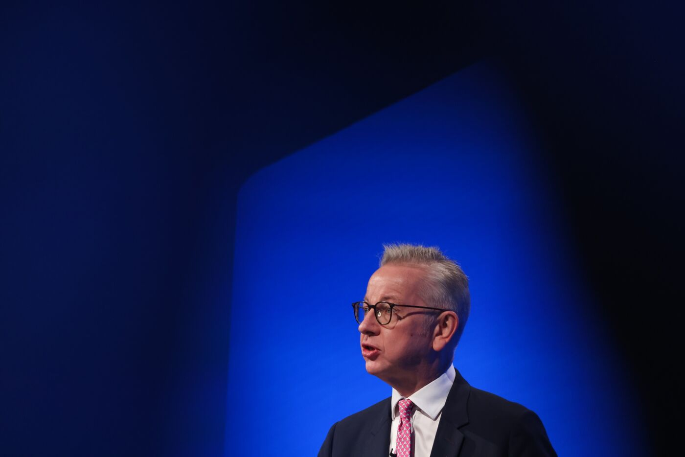

UK Draws Up Watch List of Local Councils Near Financial Trouble 
Michael Gove admits councils are facing significant pressures
He says warning that one in five are on brink is overestimate
The UK government has drawn up a “watch list” of local authorities that are on the brink of
financial collapse and acknowledged that a funding shortfall is causing “significant” strain
on many councils.
Michael Gove, the UK’s secretary of state for leveling up, distanced the
central government from the growing crisis after cuts to real terms funding
for councils since 2010, saying that the troubles were largely linked to mismanagement.
Local councils in England at risk of insolvency over £3bn funding black hole

More councils could be at risk of insolvency over the coming months as local authorities in England struggle to
fill a £3bn funding black hole caused by inflationary costs and soaring demand for services, town hall leaders have said.
According to the Local Government Association (LGA), severalcouncils are in “an endgame” where, without an increase in funding,
they face the prospect of taking increasingly drastic action to meet their legal duty to balance the books.The cost of
providing current levels of council services over the next few months is set to exceed existing available funding
by at least £2bn, and by nearly £1bn next year, the LGA said, because of high wage and fuel inflation.
Should inflation stubbornly fail to drop in line with the government’s March budget forecasts, and instead match recent
Bank of England inflation projections, it would add an extra £740m to council costs this financial year, and an extra £1.5bn
in 2024-25, it said.Pete Marland, the chair of the LGA’s resources board, said that while recent council insolvencies such as Thurrock,
Croydon, Woking and Slough were characterised by governance failures, even well-run councils were “at risk of coming to the end
of the road” financially. After 13 years of cuts, councils were now reaching the point where there was no more room to reduce
statutory services, and no financial reserves left to fill budget gaps. “We will start to see more and more councils starting to
declare virtual bankruptcy because they can’t cut services any further,” Marland said. Several councils have only been able to
sign off their books for 2022-23 by drawing down one-off, multimillion-pound lump sums running into millions of pounds
from reserves. While this keeps them afloat for now, it leaves them vulnerable should they be unable to cut costs in the coming
months. “We are in an endgame where, unless something changes in the medium- to long-term funding settlement, we start to see more
and more councils taking more drastic action,” Marland told the FT.
The financial warnings came as the first Labour chair of the LGA for nearly nine years addressed the conference.
Shaun Davies, 37, the Leader of Telford and Wrekin council and the youngest ever LGA chair, called for a new local deal for
councils – to stabilise town hall services.He said: “Simplify our funding, cut out wasteful and unnecessary bidding for resources,
and give us long-term certainty and stability. With this we can get on with working to improve people’s lives in our villages, towns
and cities.”Davies said councils faced a wave of homelessness from late August after about 8,000 Afghan individuals and families had been
served notice to leave the bridging hotels they had been put up in. “We are at crisis point,” he said.
fill a £3bn funding black hole caused by inflationary costs and soaring demand for services, town hall leaders have said.
According to the Local Government Association (LGA), severalcouncils are in “an endgame” where, without an increase in funding,
they face the prospect of taking increasingly drastic action to meet their legal duty to balance the books.The cost of
providing current levels of council services over the next few months is set to exceed existing available funding
by at least £2bn, and by nearly £1bn next year, the LGA said, because of high wage and fuel inflation.
Should inflation stubbornly fail to drop in line with the government’s March budget forecasts, and instead match recent
Bank of England inflation projections, it would add an extra £740m to council costs this financial year, and an extra £1.5bn
in 2024-25, it said.Pete Marland, the chair of the LGA’s resources board, said that while recent council insolvencies such as Thurrock,
Croydon, Woking and Slough were characterised by governance failures, even well-run councils were “at risk of coming to the end
of the road” financially. After 13 years of cuts, councils were now reaching the point where there was no more room to reduce
statutory services, and no financial reserves left to fill budget gaps. “We will start to see more and more councils starting to
declare virtual bankruptcy because they can’t cut services any further,” Marland said. Several councils have only been able to
sign off their books for 2022-23 by drawing down one-off, multimillion-pound lump sums running into millions of pounds
from reserves. While this keeps them afloat for now, it leaves them vulnerable should they be unable to cut costs in the coming
months. “We are in an endgame where, unless something changes in the medium- to long-term funding settlement, we start to see more
and more councils taking more drastic action,” Marland told the FT.
The financial warnings came as the first Labour chair of the LGA for nearly nine years addressed the conference.
Shaun Davies, 37, the Leader of Telford and Wrekin council and the youngest ever LGA chair, called for a new local deal for
councils – to stabilise town hall services.He said: “Simplify our funding, cut out wasteful and unnecessary bidding for resources,
and give us long-term certainty and stability. With this we can get on with working to improve people’s lives in our villages, towns
and cities.”Davies said councils faced a wave of homelessness from late August after about 8,000 Afghan individuals and families had been
served notice to leave the bridging hotels they had been put up in. “We are at crisis point,” he said.
Source : Click here